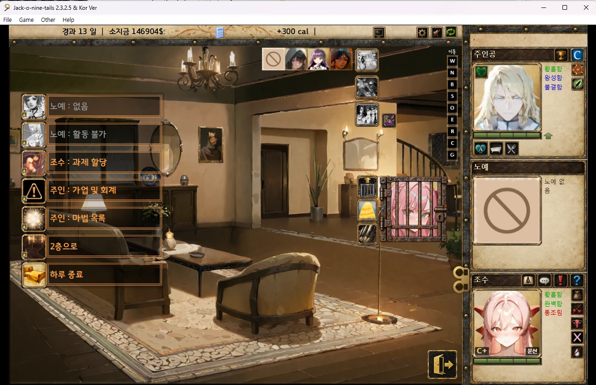
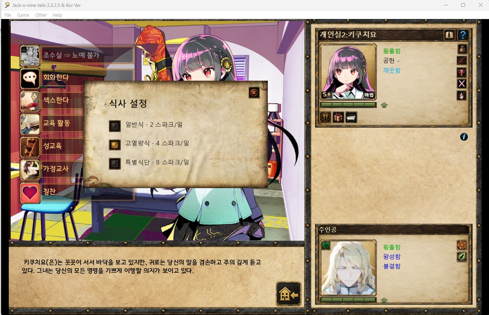

JO9 UI 패치
JO9 UI_overhaul_SNKmod · 버전 0.12 · Jack-o-nine-tails 2.3.2.5 한국어판용
설치 전에 꼭 읽어 주세요
- 게임 코드(jack.qsp)를 바꾸는 다른 모드와는 함께 쓸 수 없습니다. 이 패치를 설치하면 그런 모드의 변경은 사라집니다.
- 이 UI 패치는 반드시 맨 마지막에 설치하세요. 순서가 바뀌면 UI가 제대로 보이지 않을 수 있습니다.
- UI 패치를 설치한 뒤에 다른 패치를 설치했다면
APPLY.cmd를 다시 실행하세요.
권장 설치 순서
- JoNT_IndividualityPatchInstaller
- ai_girl_pack
- 그 밖의 이미지 패치
- 이 UI 패치 (맨 마지막)
설치 방법
- 게임을 끕니다.
- 압축을 게임 폴더가 아닌 다른 곳에 풉니다.
APPLY.cmd를 실행하고 게임 폴더의game/jack.qsp를 선택합니다.- 설치가 끝나면 게임을 실행합니다.
원래 파일은 게임 폴더의 _JO9_SNKmod_STATE에 자동으로 보관됩니다.
되돌리고 싶으면 RESTORE.cmd를 실행하세요. 세이브 파일은 건드리지 않습니다.
주요 변경 사항
1. 메인 화면
오른쪽에 주인공·노예·조수 카드가 생겼습니다. 초상화와 상태, 기분, 행동력을 한눈에 볼 수 있고 자주 쓰는 행동 버튼이 카드 안에 모였습니다. 감옥 칸의 교체 버튼 아이콘도 새 디자인으로 바뀌었습니다.

2. 개인실
개인실이 새 화면으로 바뀌었습니다. 방에 있는 인물과 주인공 카드가 오른쪽에 나오고, 회화·섹스·교육 활동·성교육·가정교사·칭찬을 왼쪽 메뉴에서 바로 고를 수 있습니다. 카드 아래 버튼으로 식사 설정, 보상, 씻기를 할 수 있고, 모유가 나오는 인물은 착유도 할 수 있습니다. 식사는 일반식·고열량식·특별식단 중에서 고릅니다.

- 임신 150일이 지나면 원작 출산 이벤트가 진행되고, 끝나면 같은 개인실로 돌아옵니다.
- 처벌·처분·청소·음식 준비는 개인실에서 하지 않습니다.
3. 새 상태 아이콘
글자로 표시되던 임신·처녀 상태가 알아보기 쉬운 그림 아이콘으로 바뀌었습니다.
 가임기
가임기 안전일
안전일 임신 불가
임신 불가 산란기
산란기 미성숙
미성숙 임신 중
임신 중 처녀막 있음
처녀막 있음 처녀막 없음
처녀막 없음 모유 나옴
모유 나옴화면이 예전 그대로라면
UI 패치를 설치한 뒤에 다른 패치가 설치되면서 게임 파일을 덮어쓴 경우입니다.
APPLY.cmd를 다시 실행하면 돌아옵니다.
게임 코드를 바꾸는 모드를 함께 쓰고 있다면 그 모드와는 같이 쓸 수 없습니다.